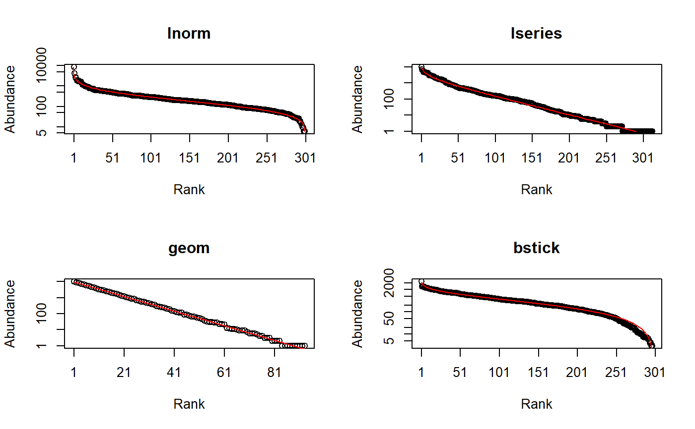

rCommunity.RdDraws random communities according to a probability distribution.
rCommunity(n, size = sum(NorP), NorP = 1, BootstrapMethod = "Chao2015", S = 300, Distribution = "lnorm", sd = 1, prob = 0.1, alpha = 40, CheckArguments = TRUE)
| n | The number of communities to draw. |
|---|---|
| size | The number of individuals to draw in each community. |
| BootstrapMethod | The method used to obtain the probabilities to generate bootstrapped communities from observed abundances. If |
| NorP | A numeric vector or a two-column matrix. Contains either abundances or probabilities. Two-column matrices should contain the observed abundances (or probabilities) in the first column and the expected ones in the second column, to allow using beta diversity functions. |
| S | The number of species. |
| Distribution | The distribution of species frequencies. May be |
| sd | The simulated distribution standard deviation. For the log-normal distribution, this is the standard deviation on the log scale. |
| prob | The proportion of ressources taken by successive species. |
| alpha | Fisher's alpha. |
| CheckArguments | Logical; if |
Communities of fixed size are drawn in a multinomial distribution according to the distribution of probabilities provided by NorP.
An abundance vector may be used instead of probabilities, then size is by default the total number of individuals in the vector. Random communities are built by drawing in a multinomial law following Marcon et al. (2012), or trying to estimate the distribution of the actual community with as.ProbaVector. If BootstrapMethod = "Chao2013", the distribution is estimated by a single parameter model and unobserved species are given equal probabilities. If BootstrapMethod = "Chao2015", a two-parameter model is used and unobserved species follow a geometric distribution.
Alternatively, the probabilities may be drawn following a classical distribution: either a lognormal ("lnorm") one (Preston, 1948) with given standard deviation (sd; note that the mean is actually a normalizing constant. Its values is set equal to 0 for the simulation of the normal distribution of unnormalized log-abundances), a log-series ("lseries") one (Fisher et al., 1943) with parameter alpha, a geometric ("geom") one (Motomura, 1932) with parameter prob, or a broken stick ("bstick") one (MacArthur, 1957). The number of simulated species is fixed by S, except for "lseries" where it is obtained from alpha and size: \(S=\alpha \ln(1 + \frac{size}{\alpha})\).
Log-normal, log-series and broken-stick distributions are stochastic. The geometric distribution is completely determined by its parameters.
A vector of species abundances (AbdVector) if a single community has been drawn, or a MetaCommunity containing simulated communities.
Chao, A., Wang, Y. T. and Jost, L. (2013). Entropy and the species accumulation curve: a novel entropy estimator via discovery rates of new species. Methods in Ecology and Evolution 4(11): 1091-1100.
Chao, A., Hsieh, T. C., Chazdon, R. L., Colwell, R. K., Gotelli, N. J. (2015) Unveiling the Species-Rank Abundance Distribution by Generalizing Good-Turing Sample Coverage Theory. Ecology 96(5): 1189-1201.
Fisher R.A., Corbet A.S., Williams C.B. (1943) The Relation Between the Number of Species and the Number of Individuals in a Random Sample of an Animal Population. Journal of Animal Ecology 12: 42-58.
MacArthur R.H. (1957) On the Relative Abundance of Bird Species. PNAS 43(3): 293-295.
Marcon, E., Herault, B., Baraloto, C. and Lang, G. (2012). The Decomposition of Shannon's Entropy and a Confidence Interval for Beta Diversity. Oikos 121(4): 516-522.
Motomura I. (1932) On the statistical treatment of communities. Zoological Magazine 44: 379-383.
Preston, F.W. (1948). The commonness, and rarity, of species. Ecology 29(3): 254-283.
Reese G. C., Wilson K. R., Flather C. H. (2013) Program SimAssem: Software for simulating species assemblages and estimating species richness. Methods in Ecology and Evolution 4: 891-896.
SpeciesDistribution and the program SimAssem (Reese et al., 2013; not an R package) for more distributions.
# Generate communities made of 100000 individuals among 300 species and fit them par(mfrow = c(2,2)) for (d in c("lnorm", "lseries", "geom", "bstick")) { rCommunity(n = 1, size = 1E5, S = 300, Distribution = d) -> AbdVec plot(AbdVec, Distribution = d, main = d) }